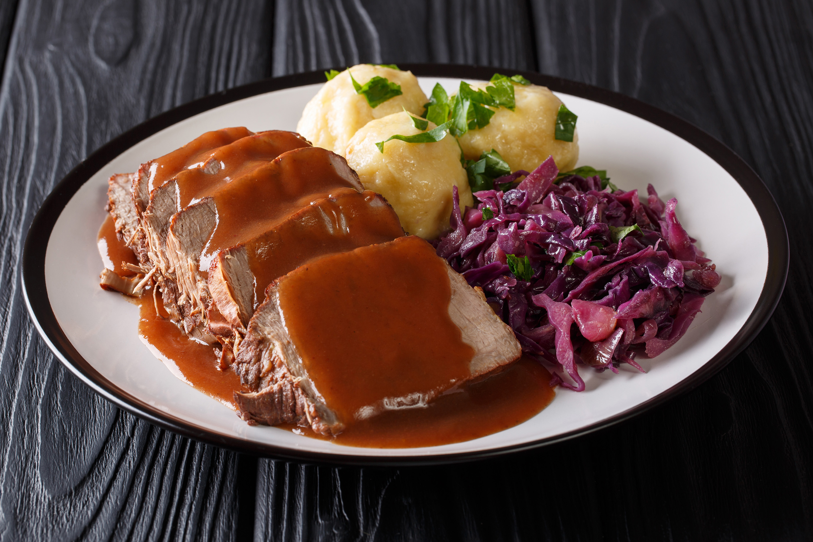

Sauerbraten

Description
Sauerbraten is a traditional German roast of heavily marinated meat. It is regarded as a national dish of Germany, and is frequently served in German-style
restaurants internationally.It can be prepared from a variety of meats, most often from beef, but also from venison, lamb and mutton, pork and horse.
Before cooking, the raw meat is marinated for three to ten days in a mixture of vinegar or wine, water, herbs, spices, and seasonings. Usually, tougher cuts of meat,
such as rump roast or bottom round of beef, are used, and the long marinating tenderizes the meat. A Sauerbraten dinner is almost always accompanied by a hearty gravy
resulting from its roasting and is most often served with potato pancakes (Kartoffelpuffer), potato dumplings (Kartoffelklöße), or Spätzle.
Ingredients
Marinate
- 2 large yellow onions, chopped
- 2 large carrots, chopped
- 1 large leek, chopped
- 3 cloves garlic, minced
- 2 sprigs thyme
- 2 sprigs rosemary
- 2 bay leaves
- 8 juniper berries
- 6 whole cloves
- 10 whole black peppercorns, cracked
- 2 ½ teaspoons kosher salt
- 1 Tablespoon sugar
- 2 cups red wine
- 1 ½ cups red wine vinegar
- 1 cup beef broth
- ½ cup golden raisins, optional
Roast
- 3-4 pounds beef chuck roast or rump roast
- 2 Tablespoons vegetable oil
- 10 gingersnap cookies, crushed
Steps
- In a large dutch oven, or another large pot that is oven-proof, combine all of the marinade ingredients. Bring to a boil over medium-high heat, boil for 10 minutes, then cool completely.
- Nestle the meat down into the cooled marinade, then cover and refrigerate for at least 48 hours and up to 2 weeks. Turn the roast each day to make sure all of the meat gets a chance to marinade thoroughly.
- Remove roast from the marinade and pat completely dry using paper towels. DO NOT DISCARD THE MARINADE. Transfer the marinade to a bowl.
- Wipe out the dutch oven and heat 2 tablespoons of olive oil in it over high heat. When the oil is hot, sear the roast on all sides until browned (about 2 minutes per side), then pour marinade into the dutch oven with the meat.
- Bring the liquids to a boil, then cover and reduce heat to a simmer.
- Simmer for 2 to 2 ½ hours, until meat is tender. Alternatively, you can transfer the dutch oven to a 350 degree F oven with the lid on for 2 to 2 ½ hours until the meat is done if you prefer.
- emove meat from the cooking liquids and set it aside on a cutting board to rest for 10 minutes.
- Meanwhile, strain the marinade, discarding the solids and reserving the liquid. Return the liquid to the dutch oven.
- Add the crushed gingersnap cookies to the reserved liquid. Cook and stir over medium-low heat for 10 minutes until thickened into a nice gravy. Taste and adjust salt and pepper as needed.
- Slice the sauerbraten into thin slices and serve with the hot gravy poured over the top.
Go Back